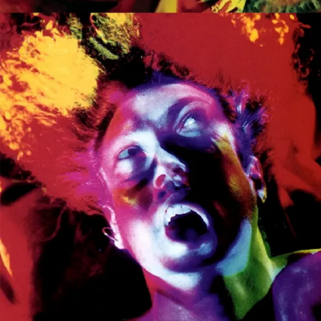

Reverse engineering head at Team Cryptonite, Manipal Institute of Technology
I'm Suraj D H. I study at Manipal Institute of Technology, where I head reverse engineering at Team Cryptonite, the institute's cybersecurity and ethical hacking student project. Most of my time goes into taking binaries apart, working through forensics challenges, and writing up what I find. I also run reverse engineering training for new members, and I compete in CTFs with the team whenever I can.
Outside of security, I spend a lot of my time with music and books, and I write poems and essays of my own.